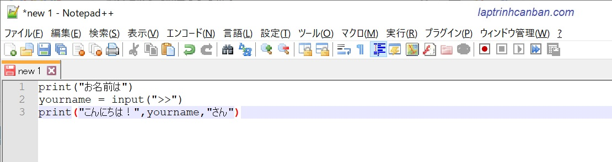
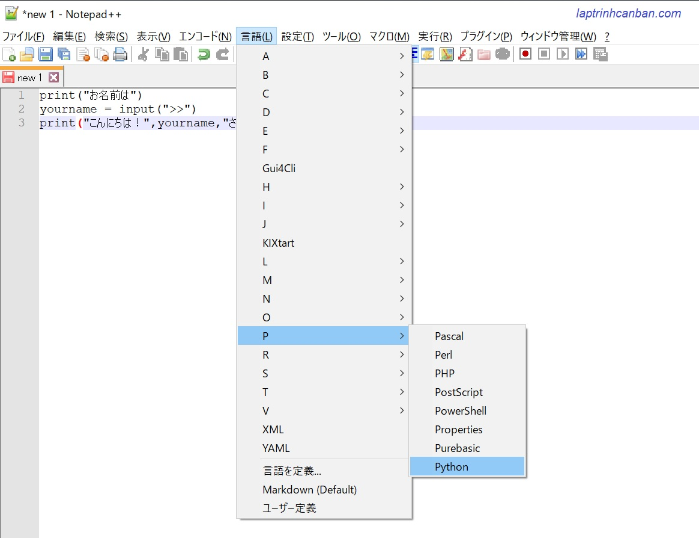
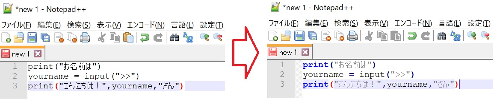
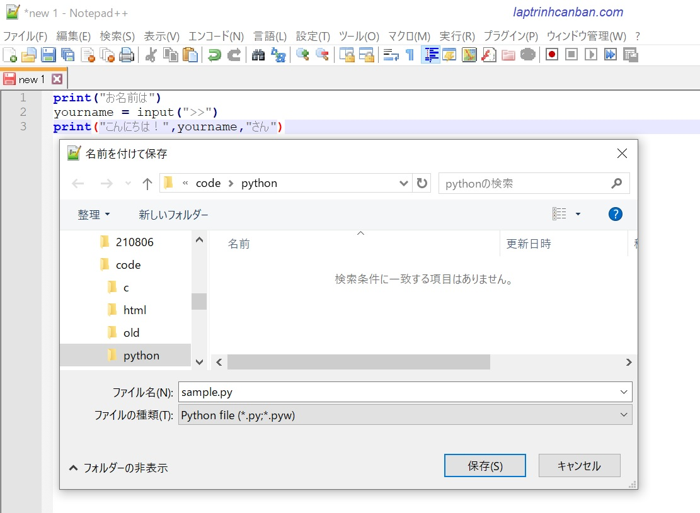
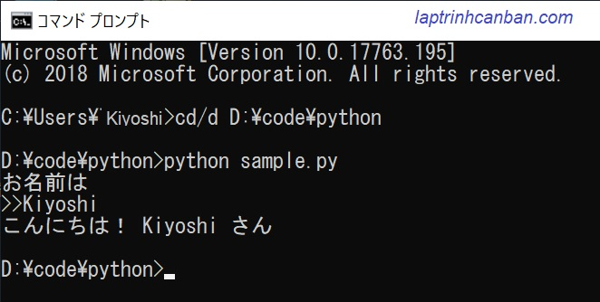
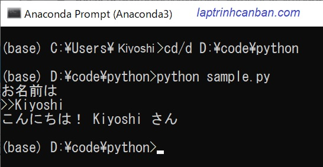

このレッスンでは、Pythonプログラムの作成、保存と実行する方法について説明します。この記事を通じて、Pythonのコードを記述するためのエディタの選択方法やそれらを使用してPythonプログラムの作成、ファイルにPythonプログラムの保存、そしてファイルに記述したプログラムの実行などの一連の流れを学びましょう。
Pythonにオススメのエディタの紹介
Pythonプログラムを作成するには、Pythonのコードを記述するためのエディタ（コーディングソフトウェア）を準備する必要があります。
Pythonのコードを書くには、Notepad++やSublime Text、Visual Studio、Sublime Textなどどんな汎用的なエディタでも出来ます。
もしエディタをコンピューターにインストールされていない場合でも、最も単純なエディタであるメモ帳（Windowsで使用可能なテキスト編集ソフトウェア）を使用することもできます。
KiyoshiはNotepadd++といったエディタを使用してPythonコードを作成することが多いため、このWebサイトでは、Notepad ++を使用してPythonコードを作成する方法を説明します。
このソフトウェアはhttps://notepad-plus-plus.orgからダウンロードできます。
尚、Notepad++意外にも次のエディタもオススメです。
- Sublime Text : 無料のPython用のエディタ。ダウンロード用サイト： https://www.sublimetext.com/3
- Visual Studio - Microsoft : 無料のPython用のエディタ。ダウンロード用サイト：Microsoft visualstudio
- Pycharm : 有料のPython用のエディタ。ダウンロード用サイト： https://www.jetbrains.com/pycharm-edu/
- サクラエディタ: 無料のPython用のエディタ。ダウンロード用サイト：https://sakura-editor.github.io/
Pythonプログラムの書き方
Pythonプログラムを書くには、まずはエディタを開いて、Pythonのコードを書いてからファイルを保存します。そしてPythonプログラムの記述されたファイルを拡張子.pyで保存しましょう。保存後、ファイルに記述したプログラムを実行したり、編集したりすることも可能です。
以下、Notepad ++ を使用してPythonプログラムの作成から保存・実行まで説明します。
Python用のエディタを起動し、Pythonプログラムを作成
Notepad ++を起動してから、次にプログラムのコードをソフトウェアの画面に直接書き込みましょう。
print("お名前は") |
Notepad ++画面は次のようになります。

Notepad ++でプログラミング言語を設定する
上記のように、ソースコードを単なる記述するだけでは、使用中の言語はどれか、Notepadd ++は認識されていないです。そのため、色自動調整などNotepad ++の便利機能がこの段階でまだ使えません。
その機能を使うために、使用中のプログラミング言語を設定する必要があります。以下の方法のどちらか使っても構わないので、プログラミング言語を設定しましょう。
- 方法1: *[Language > P > Python]*をクリックする
- 方法2: *[Alt + L > P > Python]*のキーの組み合わせを押す

すると、フォントの色が自動的に変更され、以下に示すようにコマンドをより簡単に区別できるようにします。

ファイルにPythonプログラムを保存する
デフォルトでPythonプログラムは、拡張子.pyのファイルで記述および保存されます。例えば[check_id.py]とか[sample.py]とかですね。
filename.py
プログラムをファイル拡張子.pyで保存した後、そのpythonファイルを実行するか、記録されていたプログラムを編集するなとが出来ます。
たとえば、上記で書いたpythonファイルを[sample.py]という名前で保存します。Notepad ++でPythonファイルを保存する方法は以下となります。
-[ファイル]> [すべて保存]をクリックし、[ファイル名]sample.pyと入力します。
-[ファイルの種類]ボックスで、ファイル形式をPythonファイル（.py：.pyw）として選択します。
-[保存先]ボックスでパスを選択して、ファイルを保存する場所を選択します。この例では、ファイルを[D:\code\python\sample.py]に保存するとします。
-最後に[保存]をクリックして、ファイルの保存を終了します。

Pythonの実行方法
プログラムをPythonファイルに保存した後、そのファイルに保存されているPythonコードを実行するさまざまな方法があります。通常、次の2つの方法があります。
cmdでpythonを実行する
cmdでpythonファイルを実行するには、環境変数PATHにpythonのパスを追加した条件があります。設定がまだ済ませていない方は以下の記事を参照して、環境変数PATHにpythonのパスを追加しましょう。
環境変数PATHにpythonのパスを追加したら、次のようにcmdでPythonファイル
を実行できます。
例えば記の準備した[sample.py]をcmdで実行するとします。以下の順番で行いましょう。
DOSまたはPowerShellを起動します。すると、次のようにデフォルトのディレクトリを含むcmd画面が表示されます。
C:¥Users¥Kiyoshi>
cd/d folder_pathとのコマンドを実行すると、カレントディレクトリをpythonの格納されたフォルダへ変更します。C:¥Users¥Kiyoshi>cd/d D:\code\python
D:\code\python>python sample.pyとのコマンドでそのPythonファイルを実行します。python sample.py
すると、Pythonファイルが処理され、そこに記述されたPythonプログラムの結果が次の画面のように表示されます。

AnacondaによるPythonファイルの実行方法
anacondaプロンプトでPythonファイルを実行する方法は、cmdでPythonファイルを実行する方法と似ています。コマンドを使用して、実行するpythonファイルを含むディレクトリに作業ディレクトリを移動してから、pythonファイルを実行します。
違い点は、cmd画面でコマンドを入力する代わりに、Anacondaプロンプトを開始し、この画面でコマンドを直接実行することです。
C:¥Users¥Kiyoshi>cd/d D:\code\python |
すると、Pythonファイルが処理され、そこに記述されたPythonプログラムの結果が次の画面のように表示されます。

つまり、Pythonファイルを実行するには、次の2つのことを行う必要があります。
cd/d folder_pathコマンドでPythonファイルが格納されたフォルダーに移動します。python filename.pyコマンドでそのpythonファイルを実行します。
まとめ
上記でKiyoshiは、Pythonプログラムの作成、保存と実行する方法について説明しました。レッスンの内容をよりよく理解するために、各例文を使って練習してください。
そして、次のレッスンでPythonの知識についてもっと学びましょう。
HOME>> python基礎 初心者向けのpython学習>>03. pythonの基礎知識